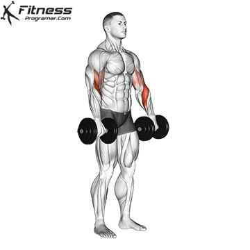
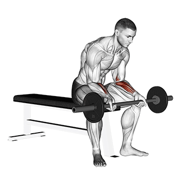

Ćwiczenia na Mięśnie Przedramion
Chin Ups

1. Chwyć drążek na szerokość barków, nachwytem supinacyjnym (dłonie skierowane do siebie)
2. Z wiszącym ciałem i całkowicie wyprostowanymi ramionami podciągnij się, aż broda znajdzie się poza drążkiem.
3. Powoli wróć do pozycji wyjściowej. Powtórz.
Dumbbell Row Unilateral

1. Oprzyj ramię o coś stabilnego (ławka, skrzynia). Przesuń swoją postawę tak, aby noga z boku ramienia roboczego znalazła się z powrotem.
2. Staraj się ustawić tułów równolegle do podłoża. To zwiększy Twój zakres ruchu.
3. Pozwól ramieniu zwisać swobodnie, a następnie odciągnij łokieć do tyłu. Wyobraź sobie, że masz piłkę tenisową pod pachą i ściskaj ją przy każdym powtórzeniu.
Dumbbell Reverse Curl

1. Chwyć hantle nachwytem pronowanym (nadręcznym). Możesz wykonać to ćwiczenie bez kciuka, jeśli wygodniej będzie Ci trzymać nadgarstki.
2. Zegnij łokcie, aż biceps dotknie przedramion. Staraj się nie wystawiać łokci na zewnątrz.
Kettlebell Wrist Curl

1. Stań prosto, trzymając odważnik Kettlebell w obu rękach przed miednicą, z przedramionami skierowanymi na zewnątrz.
2. Zegnij nadgarstek w kierunku ciała, aż odważnik znajdzie się na wysokości brzucha.
3. Opuść się do pozycji wyjściowej i powtórz.
Cable Wrist Extension

1. Użyj mocowania uchwytu. Kabel powinien być poprowadzony aż do spodu maszyny.
2. Odwróć twarz od maszyny kablowej. Przesuń swoją postawę, aby mieć lepszą bazę wsparcia.
3. Zacznij od łokcia ustawionego pod kątem 90 stopni, dłonią skierowaną w dół. Zginaj i rozciągaj nadgarstek.